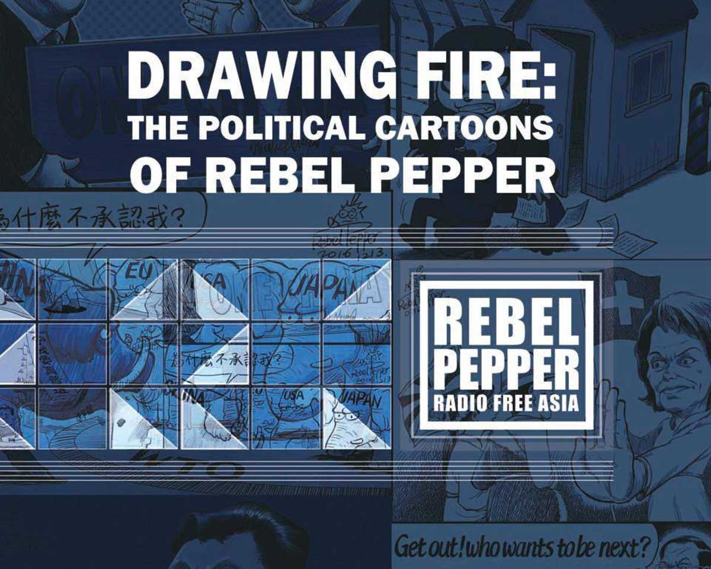
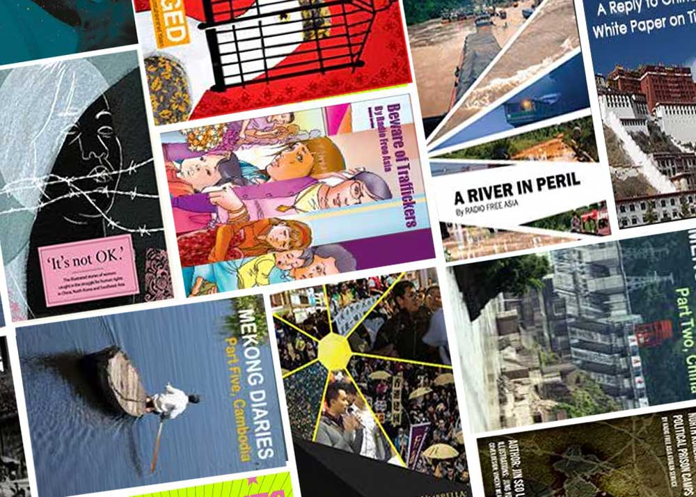

01 / STRUCTURE
Editorial hierarchy
Organized the cartoons and supporting text into a navigable reading sequence, with consistent headings and pacing.
SELECTED WORK / EDITORIAL DESIGN & DIGITAL PUBLISHING
Turning journalism, illustration, and complex narratives into thoughtfully designed digital publications.
01 / PROJECT OVERVIEW
I designed and produced digital books at Radio Free Asia, combining editorial typography, illustration, and organized page layouts to help audiences engage with reporting and cultural stories. This work includes Drawing Fire, a collection of political cartoons by Rebel Pepper, and other RFA digital publications created in collaboration with editorial colleagues.
02 / FEATURED PUBLICATION
An award-winning collection of political satire that brings together Rebel Pepper's commentary on censorship, human rights, and politics across Asia.

EDITORIAL DESIGN / PUBLICATION PRODUCTION
The book brings together 50 political cartoons by Wang Liming, known as Rebel Pepper. The design challenge was to give the illustrations space to speak while maintaining a readable, coherent structure across the collection.
I developed the publication layout in Adobe InDesign, organizing the content with editors and the artist, and balancing typography, image quality, and file size for digital distribution.
Radio Free Asia's Drawing Fire won in the e-book category, recognizing the publication's editorial work and presentation.
03 / INSIDE THE BOOK
Explore the actual published PDF below. The viewer displays the original publication, not a recreation of its pages.
If the PDF does not display in your browser, open the complete eBook in a new tab ↗.
04 / DESIGN APPROACH
01 / STRUCTURE
Organized the cartoons and supporting text into a navigable reading sequence, with consistent headings and pacing.
02 / VISUAL LANGUAGE
Used restrained color and purposeful white space to keep the focus on the illustrations and their editorial context.
03 / DELIVERY
Prepared high-quality imagery and optimized publication files for accessible sharing and reading across devices.
05 / ADDITIONAL PUBLICATIONS
Beyond Drawing Fire, I collaborated with colleagues on Radio Free Asia eBooks covering investigative reporting, cultural issues, and stories from across the region.

PUBLICATION COLLECTION
Explore the publisher's collection of digital books and long-form editorial projects.
Explore RFA eBooks ↗PUBLISHED FEATURE
Read RFA's announcement recognizing the Rebel Pepper eBook in the international journalism awards.
Read the announcement ↗06 / OUTCOME
These projects demonstrate how editorial design can turn a diverse body of reporting and visual material into a coherent digital reading experience. Drawing Fire was recognized with a Sigma Delta Chi Award, reflecting the strength of the publication as a collaborative journalism project.